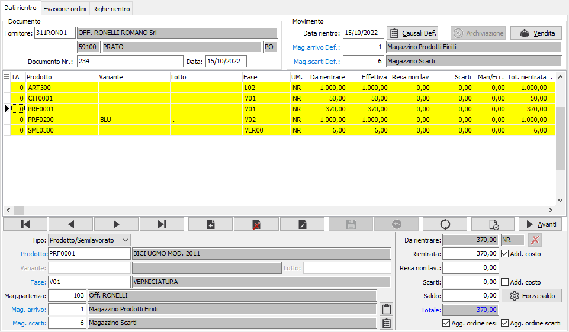
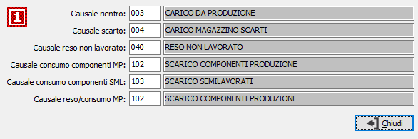
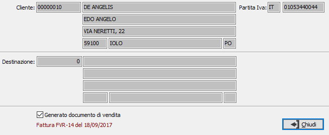
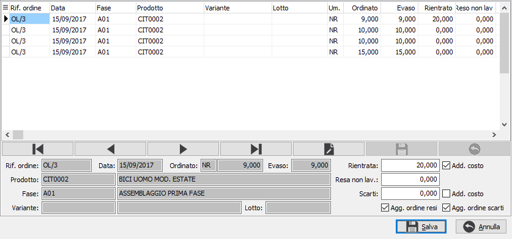
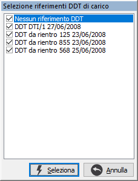
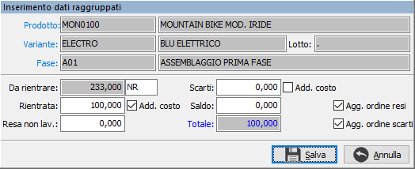

Dati
rientro
La finestra si divide in due
parti: la sezione superiore che contiene gli estremi del rientro: fornitore
data e numero documento, i dati default per causali e magazzini ed il
pulsante Vendita per accedere ai dati del cliente relativo alla fatturazione
da effettuare tramite il ciclo attivo; la sezione sottostante comprende
la griglia per la visualizzazione sintetica ed il pannello di inserimento
dei dati generali del rientro.
Passando dalla sezione superiore
alla sezione inferiore viene automaticamente visualizzato l’elenco degli
articoli che il terzista ha in carico (sulla base degli ordini terzisti
non rientrati); a questo punto l’operatore può selezionare le quantità
restituite dal terzista. La restituzione da parte del terzista può dare
luogo ad una quantità effettiva rientrata (caso classico) oppure ad una
quantità rientrata non buona (che viene indirizzata ad un magazzino scarti),
oppure ad una quantità resa non lavorata (nel senso che il terzista non
ha svolto alcuna attività). Se non previsto in configurazione il rientro
a fronte di Ddt di carico non sarà visualizzato il campo DDT di carico,
né il relativo pulsante a lato, né il pulsante di inserimento raggruppato
sul navigatore, altrimenti le righe saranno generate per riferimento DDT
di carico.
In fase di modifica sarà
attivato anche il pulsante di Eliminazione rigo, a lato dell'unità di
misura, a differenza del pulsante di cancellazione presente nella barra
di navigazione che cancella semplicemente il rigo, consente l'eliminazione
immediata e la successiva selezione del rigo come se si fosse nuovamente
in fase di inserimento, praticamente si può utilizzare per variare un
rigo che non era stato inserito correttamente senza la necessità di cancellare,
salvare tutto il rientro ed inserire un nuovo rientro.

FORNITORE: codice
del fornitore per cui viene effettuato il rientro. Sul campo è attiva
la ricerca (F9) sull’anagrafica fornitori. Campo obbligatorio. Sul
campo sono attive le funzioni di ricerca (F9) e
manutenzione (CTRL+W) sulla tabella stessa.
DOCUMENTO NR.: numero
del documento di rientro del fornitore. Campo obbligatorio.
DATA DOCUMENTO: data
del documento di rientro del fornitore. Campo obbligatorio.
DATA RIENTRO: è la
data in cui viene effettuato il rientro, viene proposta in automatico
la data di sistema.
 Il bottone Causali
Def., ed il relativo bottone presente sulle righe, consente di accedere
alla consultazione ed eventuale modifica delle causali che saranno utilizzate
per la generazione dei movimenti di magazzino del rientro; nella finestra
vengono riportate le causali presenti nella configurazione del conto lavoro.
Le causali qui presenti saranno riportate in automatico su ogni rigo della
sezione sottostante dove è comunque possibile modificarle tramite l'apposito
pulsante. Al momento della generazione delle righe di rientro, in relazione
alle quantità movimentate, su ogni riga sarà riportata la causale apposita
selezionata tra quelle inserite nel rigo, della sezione sottostante. Le
prime tre causali (rientro, scarto, reso non lavorato) sono relative ai
movimenti derivanti dalle quantità del rigo, le due seguenti (consumo
componenti MP e SML) sono relative ai componenti associati al rigo, l'ultima
(reso/consumo MP) è relativa al rientro di singole materie prime.
Il bottone Causali
Def., ed il relativo bottone presente sulle righe, consente di accedere
alla consultazione ed eventuale modifica delle causali che saranno utilizzate
per la generazione dei movimenti di magazzino del rientro; nella finestra
vengono riportate le causali presenti nella configurazione del conto lavoro.
Le causali qui presenti saranno riportate in automatico su ogni rigo della
sezione sottostante dove è comunque possibile modificarle tramite l'apposito
pulsante. Al momento della generazione delle righe di rientro, in relazione
alle quantità movimentate, su ogni riga sarà riportata la causale apposita
selezionata tra quelle inserite nel rigo, della sezione sottostante. Le
prime tre causali (rientro, scarto, reso non lavorato) sono relative ai
movimenti derivanti dalle quantità del rigo, le due seguenti (consumo
componenti MP e SML) sono relative ai componenti associati al rigo, l'ultima
(reso/consumo MP) è relativa al rientro di singole materie prime.

Il bottone
Vendita consente di accedere alla consultazione ed eventuale modifica
dei dati relativi alla vendita: nel caso in cui il terzista gestisca l’ultima
fase del ciclo di produzione e provveda ad inviare la merce direttamente
al cliente finale del committente, l’azienda stessa oltre che registrare
il carico dei prodotti finiti deve provvedere all’inserimento del DDT
di vendita (o in alternativa della fattura accompagnatoria); da questa
finestra è possibile inserire il cliente e l'eventuale destinazione che
saranno utilizzate dal ciclo per emettere il documento, inoltre riporta
l’indicazione dello stato del rientro. Per una più rapida informazione
il pulsante viene evidenziato nel caso sia già stato generato un documento
di vendita.

MAGAZZINO ARRIVO DEFAULT:
indica il magazzino di arrivo della merce di default; nel campo viene
riportato il codice presente nella configurazione del conto lavoro. Il
campo viene riportato in automatico su ogni rigo della sezione sottostante
e al momento della generazione delle righe di rientro sarà riportato su
quelle righe che trattano la quantità rientrata effettiva. Sul
campo sono attive le funzioni di ricerca (F9) e
manutenzione (CTRL+W) sulla tabella stessa.
MAGAZZINO SCARTI DEFAULT:
indica il magazzino degli scarti di default; nel campo viene riportato
il codice presente nella configurazione del conto lavoro. Il campo viene
riportato in automatico su ogni rigo della sezione sottostante e al momento
della generazione delle righe di rientro sarà riportato su quelle righe
che trattano la quantità scarti di lavorazione. Sul
campo sono attive le funzioni di ricerca (F9) e
manutenzione (CTRL+W) sulla tabella stessa.
TIPO: definisce il
tipo di rigo: rigo prodotto o semilavorato, oppure rigo materia prima.
Per quest'ultimo tipo non saranno attivi tutti i campi del rigo.
PRODOTTO: indica il
codice del prodotto oggetto del rientro. Sul
campo sono attive le funzioni di ricerca (F9) e
manutenzione (CTRL+W) sulla tabella stessa.
VARIANTE/LOTTO: nel
caso sia gestito il dettaglio quantità e gli ordini fossero stati effettuati
a variante oppure a lotti i campi saranno attivati e riporteranno i relativi
valori.
FASE: indica la fase
di lavorazione del prodotto per cui stiamo effettuando il rientro. Sul campo sono attive
le funzioni di ricerca (F9) e
manutenzione (CTRL+W) sulla tabella stessa.
MAGAZZINO DI PARTENZA:
indica il magazzino di partenza, del fornitore, da cui sarà scaricata
la merce in rientro ed i relativi componenti. Sul
campo sono attive le funzioni di ricerca (F9) e
manutenzione (CTRL+W) sulla tabella stessa.
MAGAZZINO ARRIVO:
indica il magazzino di arrivo della merce. Vale quanto detto per il magazzino
di arrivo di default. Sul campo
sono attive le funzioni di ricerca (F9) e
manutenzione (CTRL+W) sulla tabella stessa.
Nel caso sia attiva la gestione della commessa
di produzione è possibile specificarla o variarla tramite l'apposito pulsante
presente accanto alla descrizione del magazzino di arrivo.
MAGAZZINO SCARTI:
indica il magazzino degli scarti. Vale quanto detto per il magazzino scarti
di default. Sul campo sono
attive le funzioni di ricerca (F9) e
manutenzione (CTRL+W) sulla tabella stessa.
DA RIENTRARE: campo
in sola lettura; indica il totale della quantità ancora da rientrare del
prodotto alla fase. Se i valori inseriti nelle quantità successive saranno
maggiori di questo valore, verrà inserita la differenza in automatico
nella quantità mancante/eccedente.
RIENTRATA EFFETTIVA:
indicare la quantità effettivamente rientrata relativa al prodotto/fase;
dal campo, tramite i tasti CTRL+F12, si può accedere alla finestra
relativa alla conversione
di una unità di misura all'unità di misura del documento.
ADDEBITO COSTO: spuntare
la casella se per la quantità rientrata effettiva deve essere effettuato
l'addebito del costo di lavorazione, altrimenti lasciarla vuota (nel caso
di una rilavorazione o di un solo reso non lavorato).
RESO NON LAVORATO:
indicare la quantità eventualmente resa non lavorata relativa al prodotto/fase.
SCARTI DI LAVORAZIONE:
indicare la quantità eventualmente restituita come scarto della lavorazione
relativa al prodotto/fase.
ADDEBITO COSTO: spuntare
la casella se per la quantità in scarto deve essere effettuato l'addebito
del costo, altrimenti lasciarla vuota (nel caso di una rilavorazione o
di un solo reso non lavorato).
SALDO: indicare la
quantità a saldo nel caso in cui sia effettuato un rientro con quantità
minori del da rientrare oppure un rientro con quantità maggiori del da
rientrare (in questo caso il campo viene calcolato in automatico).
TOTALE QUANTITÀ: campo
in sola visualizzazione che riporta il totale delle quantità, effettiva,
resa non lavorata, scarti, eccedente/mancante, inserite in precedenza.
AGGIORNA ORDINI RESI:
indica se aggiornare la quantità rientrata sull'ordine comprendendo anche
la quantità relativa al reso non lavorata del rigo di rientro (casella
con segno di spunta).
AGGIORNA ORDINI SCARTI:
indica se aggiornare la quantità rientrata sull'ordine comprendendo anche
la quantità relativa agli scarti di lavorazione del rigo di rientro (casella
con segno di spunta).
Il bottone Forza saldo,
se premuto, consente di forzare una quantità a saldo diversa da quella
calcolata in automatico e ricalcola il campo totale; in questo modo è
possibile non chiudere il rigo del rientro e riassegnare nella pagina
successiva correttamente gli ordini. Da utilizzare in casi particolari,
ad esempio più righe ordini legate allo stesso rientro e quantità rientrata
riferita ad un solo rigo ordine con quantità diversa dall'ordinato.
Il bottone
Ordini evasi consente di rientrare un ordine terzista (OT) già chiuso.
Per poter utilizzare questa prestazione è necessario impostare in configurazione
del c/to lavoro il parametro “N. giorni ricerca OT per rientro” in cui
indicare il numero dei giorni, a partire dalla data di sistema, con cui
andare indietro a ricercare gli ordini terzisti completamente rientrati;
viene mostrata una finestra in cui sano elencati gli ordini completamente
rientrati che sono stati trovati e per ognuno è possibile assegnare le
quantità ed i flag di addebito; le righe di sintesi generate da questa
finestra non sono modificabili, ma solo cancellabili, per il resto vengono
trattate come le altre sia per quanto riguarda l'evasione dell'ordine
che per la generazione delle righe di rientro.


Se previsto in configurazione
il rientro a fronte di Ddt di carico, le righe di rientro generate non
saranno raggruppate per prodotto/fase, ma riportate singolarmente per
riferimento al 
DDT
di carico e sarà visibile su ogni riga il riferimento al DDT stesso; cliccando
sul pulsante a lato del riferimento sarà possibile filtrare la visualizzazione
selezionando i DDT per cui visualizzare i prodotti. Compare la finestra
a lato in cui saranno presenti tutti i DDT di carico selezionati, apponendo
la spunta questi saranno considerati nella visualizzazione. Quando è attivo
un filtro sui DDT di carico le righe appaiono in blu ed il pulsante di
filtro si modifica in filtro presente se si preme nuovamente e si selezionano
tutti i riferimenti la visualizzazione torna nel colore nero standard
ed il pulsante indica l'assenza del filtro.
Con questo tipo di configurazione attiva è
disponibile nella barra di navigazione anche il pulsante di inserimento
raggruppato, che consente di inserire i valori del rigo, ma relativamente
a tutti i prodotti/fase uguali a quello del rigo attivo: i dati sono gli
stessi del rigo, ma relativi a tutti i prodotti/fasi uguali a quello che
è selezionato al momento della pressione del pulsante, al salvataggio
i valori inseriti saranno frazionati fra le righe in modo sequenziale
fino ad esaurimento della quantità da rientrare di ogni singolo rigo.
 Terminata la fase di
inserimento o completamento delle righe la pressione sul pulsante oppure
del tasto Salva sulla toolbar o del tasto F10, consente di accedere alla
sezione relativa all'evasione degli ordini.
Terminata la fase di
inserimento o completamento delle righe la pressione sul pulsante oppure
del tasto Salva sulla toolbar o del tasto F10, consente di accedere alla
sezione relativa all'evasione degli ordini.